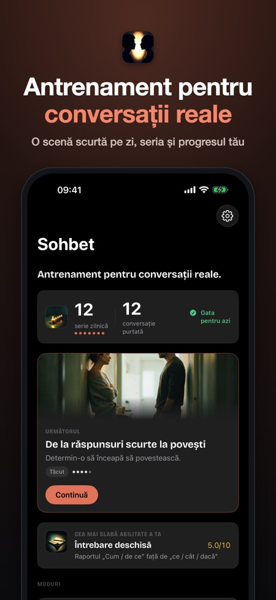
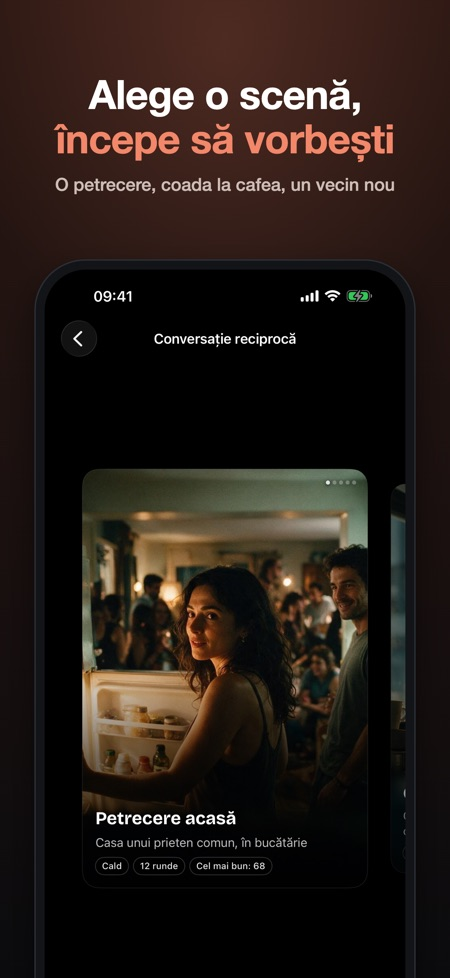
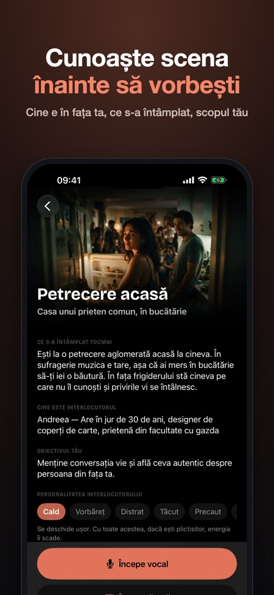

Cum să vorbești cu oamenii. Două conversații fără abonament — conversație live, mod vocal și evaluare completă. Fără cont, fără email. Acum în 41 de limbi, iar Pro începe cu o săptămână de probă.



Sohbet este un joc în care îți exersezi abilitățile sociale cu cineva care reacționează realist.
Persoana din fața ta este jucată de o inteligență artificială și nu încearcă să fie amabilă. Pune întrebări închise și se va plictisi. Vorbește prea mult despre tine și își va pierde interesul. Întreabă lucrul potrivit la momentul potrivit și se va deschide. Bara de interes din partea de sus a ecranului arată acest lucru în timp real — dacă ajunge la zero, conversația s-a încheiat.
CÂND SE ÎNCHEIE CONVERSAȚIA
Evaluarea nu începe cu laude. Merge replică cu replică: ce ai făcut, de ce a funcționat sau nu acea mutare și ce ai fi putut spune în schimb. Fără sfaturi generale precum „fii mai deschis” — fiecare notă este legată de numărul replicii și de o propoziție pe care ai scris-o efectiv. Replicile sugerate sunt fraze pe care le-ai putea folosi cu adevărat.
Punctajul este aspru. O conversație medie obține 50-60; peste 80 înseamnă că a fost într-adevăr bună. Un evaluator care laudă totul nu te învață nimic.
VORBEȘTE ÎN LOC SĂ TASTEZI
Poți vorbi în loc să tastezi. Vocea personajului este masculină sau feminină, în funcție de scenariu. Ritmul și pauzele tale intră, de asemenea, în evaluare — exact așa cum s-ar întâmpla într-o conversație reală.
16 SCENARII
Masa alăturată dintr-o cafenea, o petrecere acasă, o cină de lucru, așezarea lângă cineva pe care nu-l cunoști, întreruperea politicoasă a cuiva, refuzarea unei invitații. Se deblochează de la ușor la greu. Poți rejuca un scenariu împotriva unei personalități diferite — aceeași scenă, dar o persoană mult mai dificilă.
SCENARII CONSTRUITE PE BAZA LIPSURILOR TALE
După câteva conversații devine clar ce abilitate este rămasă în urmă. O singură atingere generează un scenariu nou axat exact pe acea abilitate.
ISTORIC
Fiecare conversație este păstrată împreună cu transcrierea și evaluarea sa. Îți poți vedea obiceiurile repetitive — dacă te blochezi mereu în același loc sau dacă te perfecționezi.
CONFIDENȚIALITATE
Fără cont, fără email. Transcrierile și evaluările tale sunt salvate pe telefon. În timpul conversației, textul trece prin serverul nostru către modelul AI care scrie replicile personajului și evaluarea ta, iar vocea ta ajunge la un serviciu de recunoaștere a vorbirii care o transformă în text. Serverul nostru nu păstrează textul, cu două excepții: o cerere care eșuează este păstrată 7 zile ca să putem repara eroarea și, doar dacă activezi asta în Setări, un mic eșantion de conversații este păstrat 90 de zile pentru îmbunătățirea aplicației. Niciuna nu este legată de tine. Sunetul nu este salvat niciodată ca fișier.
ABONAMENT
Două conversații sunt incluse fără abonament — cu personajul live, modul vocal și evaluarea completă. Sohbet Pro este lunar și începe cu o săptămână de probă: elimină această limită și deblochează, de asemenea, raportul antrenorului, care analizează toate conversațiile tale la un loc, precum și generarea de scenarii axate pe lipsurile tale.
Abonamentul se reînnoiește automat la sfârșitul fiecărei perioade. Îl poți anula oricând din Setări > Cont Apple > Abonamente.